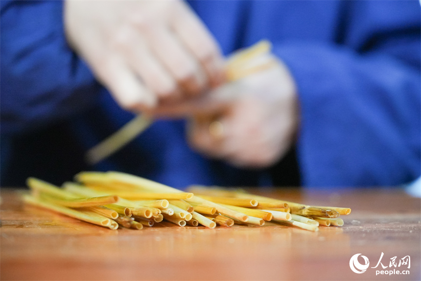
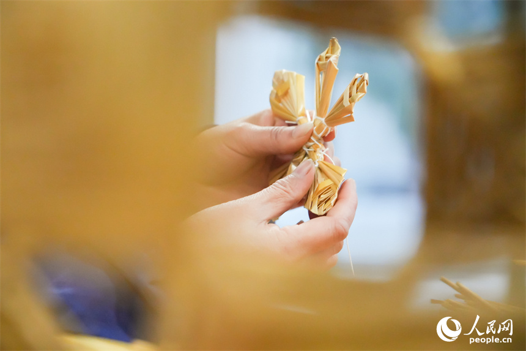
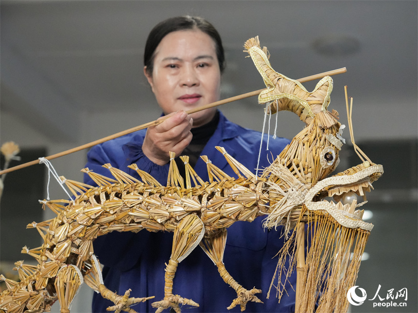
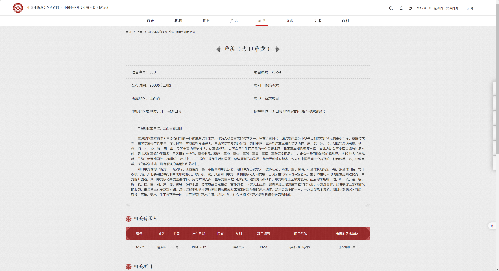

湖口草龙是一种古老而精巧的民间艺术，其发源地——江西省湖口县，是一片有着光荣革命传统的红色土地。无数革命先烈的光辉事迹至今依然鼓舞着一代代湖口人民接续奋斗。在“两个一百年”奋斗目标历史交汇的关键节点，湖口坚持将历史、现实、未来相贯通，着力用活红色资源、讲好红色故事、传承红色基因，全力发展有关草龙的红色民俗文化。
湖口草龙的制作工艺极为复杂，需使用稻草、竹木、铁丝等材料，采用编、插、织、嵌、镶、绕、缠、悬、挂、空、别、剔、镂、透等多种工艺技巧。制作一条草龙通常需要数万根稻草，包括龙头的精细编制、龙身的连绵起伏，以及龙尾的独特设计，每一处细节都展现出工匠们的精湛技艺和智慧。



湖口草龙已被列为国家级非物质文化遗产。2023年10月31日，《国家级非物质文化遗产代表性项目保护单位名单》公布，草编（湖口草龙）项目保护单位湖口县非物质文化遗产保护研究会评估合格。在国家政策的大力支持下，湖口草龙深植于红色革命老区，发扬红色革命精神，进一步发挥振兴乡村、造福人民的作用。

非物质文化遗产往往与所处的自然环境紧密相关，湖口草龙的发源地地处较为偏僻的乡镇地区，经济发展一般，其影响力受到地理区域的局限。同时，湖口草龙作为我国传统农业社会发展下劳动人民智慧的结晶，与农业、农村、农民紧密相连。但随着我国进入城镇化和工业化阶段，产业转型使得更多的青壮年离开本土，从事二三产业工作，造成了草龙传承人的缺失。
随着现代高新技术的发展和互联网的成熟稳定，数字化越来越多地被应用于非物质文化遗产的保护和传承事业中。本团队计划推出数字草龙产品，以虚拟现实技术为依托，建构起数字草龙文化馆，充分展现湖口草龙的形态和舞蹈动作，以此再次点燃草龙的生命力，打破草龙的地理区域局限性和传承主体缺失性。